Acerca de arc42
arc42, la plantilla de documentación para arquitectura de sistemas y de software.
Revisión de la plantilla: 7.0 ES (basada en asciidoc), Enero 2017
Por Dr. Gernot Starke, Dr. Peter Hruschka y otros contribuyentes.
Ver https://arc42.org.
1. Introducción y objetivos
La empresa de desarrollo de juegos Micrati ha decidido desarrollar una plataforma web donde los usuarios puedan jugar diferentes variantes del juego Y, un juego estratégico de tablero existente. El objetivo inicial es ofrecer una experiencia entretenida e intuitiva que atraiga a nuevos usuarios y los mantenga comprometidos con el producto a largo plazo. La plataforma (YOVI) estará disponible en web, permitirá jugar contra diferentes estrategias de bots con niveles de dificultad seleccionables. El motor de reglas y verificación está implementado en Rust, mientras que el cliente web principal está desarrollado en TypeScript.
1.1. Resumen de requisitos
Los requisitos principales del sistema son:
-
Ofrecer una versión clásica del juego Y en la web, donde los usuarios podran registrarse y jugar partidas contra la máquina.
-
Se podrá jugar con distintas estrategias y con varios modos de dificultad. Se necesitan al menos dos estrategias distintas; los jugadores eligirán contra qué estrategias y dificultades jugar.
-
Los usuarios podrán registrarse en el sistema. Una vez registrados, las partidas que jueguen serán almacenadas en un histórico de partidas (número de juegos realizados, ratio de victorias, etc.) que podrán ser consultado desde su cuenta.
-
La aplicación ofrecerá una API que permitirá a los bots obtener información relacionada con los usuarios del sistema usuarios y el histórico de partidas. Se deberá documentar correctamente este API.
-
La aplicación ofrecerá un API que permitirá a los bots jugar contra la aplicación, utilizando un método play que especificará su posición del tablero en notación YEN mediante un parámetro position. Opcionalmente, también se especificará el ID del bot contra el que jugar mediante un parámetro bot_id.
1.2. Objetivos de calidad
| Objetivo de calidad | Descripción |
|---|---|
Usabilidad |
El sistema debe ser fácil de usar y de aprender para los usuarios finales. Esto fomentará que utilicen la aplicación nuevamente y disfruten la experiencia. Interfaces intuitivas y flujos de usuario simplificados (≤3 pasos para acciones principales). |
Accesibilidad |
El juego debería tener en cuenta la usabilidad por parte de personas con problemas de visión o audición para que estas puedan jugar sin problemas. |
Rendimiento |
La aplicación debe responder a las solicitudes de los usuarios en un tiempo razonable (< 0.5 segundos) para evitar que abandonen la aplicación y garantizar una experiencia fluida en el juego. |
Mantenibilidad |
El sistema debe ser fácil de mantener y extender. Esto se logra siguiendo buenas prácticas de programación, manteniendo excelente comunicación dentro del equipo de desarrollo y documentación clara. |
Seguridad |
Los datos privados de los usuarios registrados deben mantenerse seguros. |
Exactitud |
El motor del juego debe validar movimientos y detectar correctamente la condición de victoria según las reglas del juego Y, con precisión del 100% en casos de prueba definidos. |
1.3. Stakeholders
| Role/Name | Contact | Expectations |
|---|---|---|
Equipo de desarrollo |
https://github.com/NachoTS, https://github.com/tonipdd, https://github.com/alonsobayonalejandro-ctrl, https://github.com/Gedepe, https://github.com/UO300475 |
Responsables de desarrollar la aplicación usando buenas técnicas, trabajar adecuadamente como equipo y lograr una solución lo más mantenible, usable y extensible posible. |
Usuarios / Jugadores |
- |
Tener una buena experiencia utilizando la aplicación, donde puedan jugar al juego usando diferentes estrategias y consultar sus estadísticas. |
Micrati |
- |
Espera obtener una aplicación que se alinee con sus ideas y objetivos, que pueda servir como base para futuras extensiones comerciales. |
Profesores de la asignatura ASW |
- |
Asumir el rol de Product Owner, definiendo requisitos de alto nivel, proporcionando retroalimentación al equipo de desarrollo y evaluando el producto desarrollado. Asegurar que se sigan buenas prácticas arquitectónicas y que el código sea mantenible y bien documentado. |
2. Restricciones de Arquitectura
Esta sección describe las restricciones que limitan la libertad de decisión de los arquitectos de software en cuanto al diseño, implementación y proceso de desarrollo.
2.1. Restricciones Técnicas
Restricción |
Descripción |
Arquitectura Políglota |
El sistema debe estar compuesto por servicios que utilizan diferentes tecnologías: TypeScript (Aplicación web) y Rust (Motor de Juego). |
Contenedores |
Todos los servicios y componentes de infraestructura deben estar contenedorizados mediante Docker en al menos dos subsistemas. |
API para bots |
Se debe ofrecer un API que permita a bots interactuar con la aplicación. |
Estándar de Documentación |
La documentación de la arquitectura debe seguir la plantilla Arc42 y estar escrita en formato AsciiDoc. |
2.2. Restricciones Organizativas
Restricción |
Descripción |
Control de Versiones |
Uso obligatorio de GitHub como repositorio central para el código, seguimiento de incidencias (issues) y colaboración. |
Despliegue |
Despliegue automatizado mediante GitHub Actions y alojamiento de la documentación técnica en GitHub Pages. |
2.3. Convenciones
Restricción |
Descripción |
Arquitectura de Tres Capas |
El sistema debe mantener una separación clara entre la interfaz de usuario ( |
Comunicación API |
Los servicios deben comunicarse a través de APIs REST utilizando JSON, con puntos de enlace (endpoints) configurables (ej. |
Estándar de Notación |
El motor de juego debe utilizar formatos específicos para la representación de las partidas: YEN (Y Exchange Notation). |
3. Contexto y alcance
Esta sección describe el entorno en el que opera el sistema YOVI y las interacciones con actores externos. El sistema se presenta como una caja negra, mostrando únicamente sus relaciones con el exterior.
3.1. Contexto de negocio
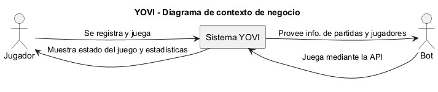
El sistema YOVI proporciona al jugador información sobre el estado del juego y diferentes estadísticas.
El actor externo principal del sistema es el jugador, que puede registrarse y participar en partidas.
Además, existe el actor de bot externo, el cual se conectra con el API de la aplicación para jugar y para obtener información de personajes y partidas.
3.2. Contexto técnico
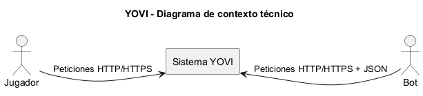
El sistema YOVI expone una interfaz basada en servicios web accesibles mediante protocolo HTTP/HTTPS.
Los actores externos interactúan con el sistema mediante peticiones y respuestas estructuradas en formato JSON.
3.2.1. Mapeo de entrada/salida a canales
| Actor | Canal | Entrada al sistema | Salida del sistema |
|---|---|---|---|
Jugador |
HTTP/HTTPS |
Datos de registro, autenticación, acciones del juego |
Estado del juego, resultados, estadísticas |
Bot |
HTTP/HTTPS + JSON |
Acciones automatizadas del juego |
Estado del juego y resultados |
4. Estrategia de Solución
4.1. Tecnologías seleccionadas
Basándonos en los requisitos del proyecto, se han seleccionado las siguientes tecnologías para garantizar un sistema modular y eficiente:
-
Frontend:
-
React & Vite: Para construir una interfaz de usuario rápida y reactiva como Single Page Application (SPA).
-
TypeScript: Añade tipado estático para reducir errores en el desarrollo del frontend.
-
-
Backend de Usuarios:
-
Node.js & Express: Entorno ligero y escalable para gestionar la lógica de usuarios y la API REST.
-
-
Motor de Juego:
-
Rust: Elegido por su alto rendimiento y seguridad de memoria para el core del motor y la lógica de bots.
-
Cargo: Sistema de gestión de paquetes y construcción para el ecosistema Rust.
-
-
Persistencia y Datos:
MySQL: junto al ORM Sequelize para la gestión de la base de datos relacional, facilitando las operaciones CRUD y la integración con el backend de usuarios.
4.2. Decisiones de organización del equipo
Para maximizar la eficiencia y la colaboración usaremos todas las herramientas disponibles, como GitHub para el control de versiones y la gestión de tareas a través de Issues y Projects, ademas de crear un kanban para organizar las tareas y el progreso del proyecto. Se asignarán roles específicos a cada miembro del equipo, como desarrolladores frontend, backend y de motor de juego, para asegurar que cada área del proyecto esté bien cubierta.
Tambien usaremos Discord o Teams para la comunicación en tiempo real y la coordinación de actividades diarias.
5. Vista de Bloques
5.1. Sistema General de Caja Blanca
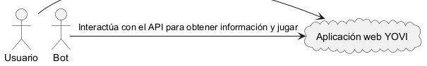
- Motivación
-
La aplicación web YOVI permite a los usuarios registrarse en su sistema para jugar partidas al juego Y. Una vez registrados, los jugadores pueden jugar partidas contra la máquina; el sistema registrará su histórico de juego y diversas estadísticas.
Además, la aplicación ofrece un API externo que permite a los bots interactuar con ella y obtener información de partidas y de jugadores, así como jugar contra ella.
- Bloques de construcción contenidos
| Nombre | Responsabilidad |
|---|---|
Usuario |
Interactúa con la aplicación web para registrarse en ella y jugar partidas al juego Y |
Bot |
Interactúa con el API de la aplicación para obtener información de jugadores/partidas y para jugar contra la máquina |
Aplicación web YOVI |
Muestra la interfaz web al usuario y expone el API para los bots. |
5.2. Nivel 2
5.2.1. Caja Blanca Aplicación web YOVI
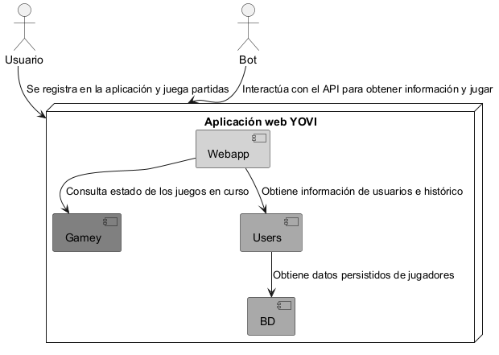
- Motivación
-
La aplicación se divide en tres subsistemas: el motor de juego, Gamey, el módulo de gestión de usuarios, Users, y la interfaz de la aplicación web, Webapp. Webapp se comunica con Gamey y Users para poder llevar a cabo sus funciones de gestionar sesiones de usuarios y juegos en curso.
- Bloques de construcción contenidos
| Nombre | Responsabilidad |
|---|---|
Usuario |
Interactúa con la aplicación web para registrarse en ella y jugar partidas al juego Y |
Bot |
Interactúa con el API de la aplicación para obtener información de jugadores/partidas y para jugar contra la máquina |
Gamey |
Gestiona el motor del juego Y tanto como para usuarios como para bots |
Users |
Gestiona el registro e inicio de sesión de usuarios, así como su histórico |
Webapp |
Muestra la aplicación web al usuario y expone el API de juego a los bots |
BD |
Almacena la información sobre los usuarios e histórico de partidas |
5.3. Nivel 3
5.3.1. Caja Blanca Gamey
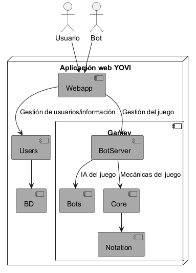
- Motivación
-
El módulo de juego Gamey separa las responsabilidades de gestión de peticiones de juego, gestión de mecánicas del juego y selección de IAs contra las que jugar en submódules diferentes con el objetivo de que estos sean fácilmente configurables o reemplazables.
- Bloques de construcción contenidos
| Nombre | Responsabilidad |
|---|---|
Bots |
Provee lógica de juego contra la que otros usuarios y bots podrán jugar |
BotServer |
Gestiona las peticiones de juegos (movimientos de juego, estado de la partida) realizadas por usuarios y bots. |
Core |
Provee la lógica base de las mecánicas del juego tales como los movimientos válidos o las condiciones de victoria |
Notation |
Provee estructura sobre la notación YEN de movimientos y estado del juego |
5.3.2. Caja Blanca Users
- Motivación
-
El módulo de juego Users separa las responsabilidades de registro/inicio de sesión de usuarios y recopilación de estadísticas de juego en dos submódulos distintos con acceso a la base de datos.
- Bloques de construcción contenidos
| Nombre | Responsabilidad |
|---|---|
users-service |
Gestiona el registro e inicio de sesión de usuarios |
users-stats-service |
Gestiona las estadísticas de juego y rankings de usuarios |
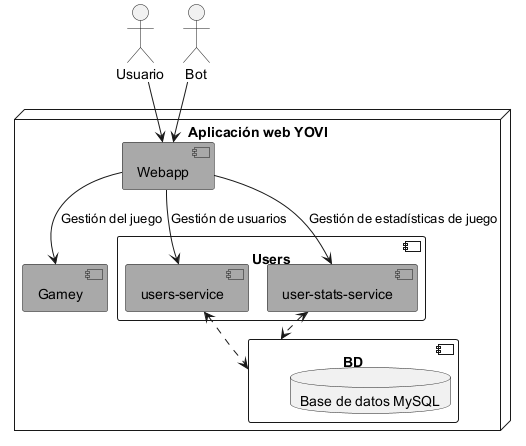
6. Vista de ejecución
A continuacion se presentan los distintos escenarios que describen las interacciones entre las instancias del sistema. Cada escenario se centra en un caso de uso específico, que seran:
-
Registro de un nuevo usuario
-
Inicio de sesión
-
Partida de juego
-
Consultar ranking de jugadores
6.1. Registro de un nuevo usuario
Al entrar por primera vez a la aplicación, el usuario se encuentra con la pantalla de registro. En esta pantalla, el usuario introduce sus datos y al hacer clic en el botón de registro, se envía una solicitud al servidor para crear una nueva cuenta. Si es valida se crea la cuenta y se muestra un mensaje de éxito, de lo contrario se muestra un mensaje de error indicando el motivo del fallo.
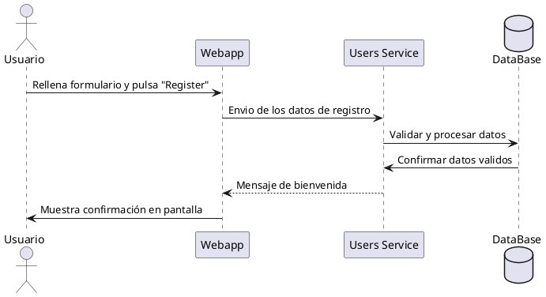
6.2. Inicio de sesión
Tras crear un usuario, el usuario puede iniciar sesión en la aplicación. En la pantalla de inicio de sesión, el usuario introduce su nombre de usuario y contraseña. Al hacer clic en el botón de inicio de sesión, se envía una solicitud al servidor para autenticar al usuario. Si las credenciales son correctas, se muestra la pantalla principal de la aplicación, de lo contrario se muestra un mensaje de error indicando que las credenciales son incorrectas.
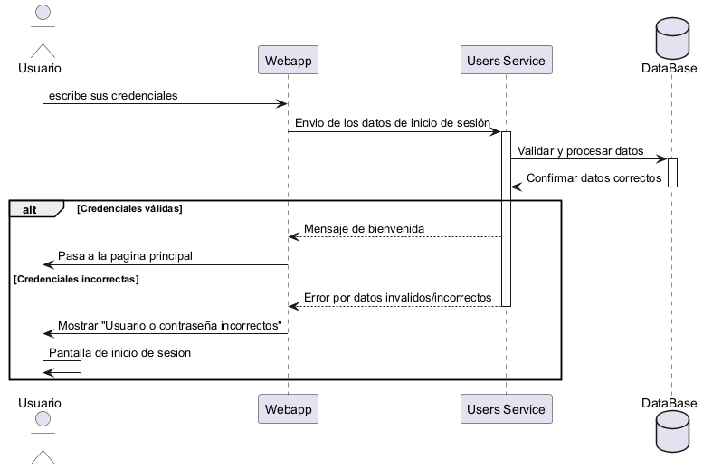
6.3. Secuencia de partida de juego
Una vez que el usuario ha iniciado sesión, puede comenzar una partida de juego. Al hacer clic en el botón "Start Game", se envía una solicitud al servidor para iniciar una nueva partida. El servidor responde con los detalles de la partida, como el número de jugadores y el estado del juego. La aplicación muestra la pantalla de juego con la información recibida.
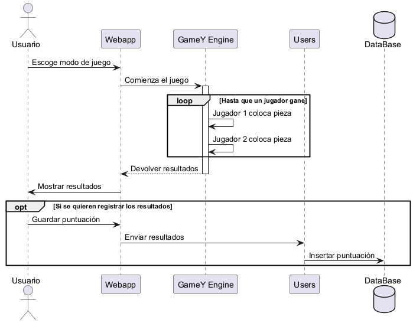
7. Vista de Despliegue
7.1. Nivel de infraestructura 1
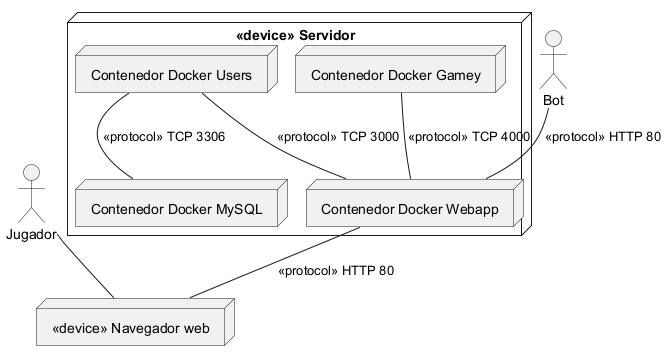
- Motivación
-
La infraestructura del sistema se divide en varios servicios desplegados en sendos contenedores Docker con el objetivo de conseguir una arquitectura modular que permita que cada servicio sea fácilmente reemplazable y desplegable en otra máquina o entorno.
- Características de Calidad/Rendimiento
-
-
Tolerancia a fallos: un módulo concreto puede fallar sin que esto afecte al resto.
-
Modularidad: los componentes pueden ser reemplazados de forma sencilla.
-
Reusabilidad: componentes concretos pueden ser instalados en otros entornos de forma sencilla.
-
Coexistencia: la infraestructura puede desplegarse correctamente en entornos que comportan otros productos.
-
Adaptabilidad: la infraestructura puede ser desplegada en un sistema abstrayéndose de su configuración concreta.
-
Instalabilidad: la infraestructura puede ser instalada de forma sencilla en un nuevo sistema.
-
- Mapeo de los Bloques de Construcción a Infraestructura
-
Cada módulo de la aplicación es desplegado en un contenedor Docker distinto. De la misma forma, el sistema gestor de bases de datos también es desplegado en su propio contenedor Docker.
A continuación se detalla el mapeo de artefactos de software a infraestructura.
| Artefacto | Infraestructura |
|---|---|
Gamey |
Contenedor Docker Gamey |
Users |
Contenedor Docker Users |
Webapp |
Contenedor Docker Webapp |
Base de datos |
Contenedor Docker MySQL |
8. Conceptos Transversales (Cross-cutting)
8.1. Tecnología utilizada
La persistencia de datos se gestiona mediante una base de datos MySQL, accedida a través del ORM Sequelize en el backend Node.js. Sequelize se encarga de la creación y sincronización de las tablas, así como de la gestión de las relaciones entre entidades.
8.2. Entidades y esquema relacional
El modelo de datos está compuesto por dos tablas: Usuarios y Partidas. La relación entre ellas es de uno a muchos: un usuario puede tener asociadas múltiples partidas, pero cada partida pertenece exactamente a un usuario. La integridad referencial se gestiona mediante la clave foránea id_usuario en la tabla Partidas.
8.2.1. Tabla Usuarios
Almacena los datos de registro y autenticación de cada jugador registrado en el sistema.
| Campo | Tipo | Restricciones | Descripción |
|---|---|---|---|
|
INTEGER |
PK, AUTO_INCREMENT |
Identificador único del usuario |
|
VARCHAR(255) |
NOT NULL |
Nombre real del usuario |
|
VARCHAR(255) |
NOT NULL, UNIQUE |
Nombre de usuario para login |
|
VARCHAR(255) |
NOT NULL |
Contraseña del usuario (hash) |
8.2.2. Tabla Partidas
Registra el historial de partidas jugadas, asociando cada partida a un usuario y al bot oponente.
| Campo | Tipo | Restricciones | Descripción |
|---|---|---|---|
|
INTEGER |
PK, AUTO_INCREMENT |
Identificador único de la partida |
|
INTEGER |
NOT NULL, FK |
Referencia al usuario que jugó la partida |
|
VARCHAR(255) |
NOT NULL |
Identificador del bot oponente |
|
BOOLEAN |
NOT NULL |
|
8.3. Decisiones de diseño relevantes
-
Resultado de la partida: se almacena como un valor booleano (true si el usuario gana y false si el usuario pierde) porque los empates no son posibles en el juego Y.
-
Almacenamiento de contraseñas: El campo
contrasenadebe almacenar exclusivamente el hash de la contraseña. La responsabilidad del hasheo recae en la capa de servicio, no en el modelo.
9. Decisiones de arquitectura
Para más decisiones arquitectónicas, véase el punto 4 de esta documentación y el siguiente enlace de la wiki: Registro de decisiones.
9.1. Selección de sistema gestor de base de datos
9.1.1. Contexto
Existía la necesidad de seleccionar un sistema de persistencia para la aplicación.
9.1.2. Decisión
Se tomó la decisión entre los desarrolladores de utilizar un SGBD relacional, puesto que el modelo de datos seguía un modelo entidad-relación.
Además, de entre múltiples SGBD relacionales, se decidió utilizar MySQL debido a que los desarrolladores ya conocían la tecnología y a que este SGBD se comporta adecuadamente en entornos concurrentes.
9.1.3. Estado
Aceptado
9.1.4. Consecuencias
El modelo de persistencia de la aplicación queda atado a un modelo entidad relación, lo cual complicaría el cambio a un SGBD no relacional.
Por otra parte, cambiar de un SGBD relacional a otro no debería suponer mayor problema.
9.2. Selección de ORM
9.2.1. Contexto
Existía la necesidad de facilitar la interacción con el SGBD.
9.2.2. Decisión
Se tomó la decisión de utilizar un ORM para facilitar y acelerar el desarrollo. Pese a que inicialmente no se estaba seguro de cuál utilizar por falta de experiencia en el entorno actual (Node.js + Express), se decidió utilizar el ORM Sequelize por ser compatible con MySQL y estar bien documentado.
9.2.3. Estado
Aceptado
9.2.4. Consecuencias
La lógica de de interacción con la persistencia queda atada al API de Sequelize. Cambiar este ORM por otro puede incurrir en tiempo de desarrollo adicional.
Por otra parte, se espera que el uso de este ORM acelere el desarrollo del módulo users.
9.3. Arquitectura de comunicación con gamey
9.3.1. Contexto
Se debía decidir cómo comunicar el estado de la partida con el motor de juego (gamey).
9.3.2. Decisión
Se tomó la decisión de utilizar una arquitectura cliente servidor sin estado; de esta forma, no se envía un movimiento como tal, sino la disposición actual de las fichas en el tablero. A partir de esta información, Gamey calcula y devuelve su jugada sin depender de acciones previas en la partida.
9.3.3. Estado
Aceptado
9.3.4. Consecuencias
No tener que gestionar el estado de la partida en gamey ayuda al desacoplamiento entre gamey y el cliente, pues gamey no necesita conocer el estado de movimientos de la partida para poder responder a las peticiones de juego. También facilita la programación de bots, puesto que estos no necesitan acceder al estado de movimientos previos de la partida para dar su respuesta.
Sin embargo, esto limita qué tipo de bots pueden programarse, ya que dificulta la programación de bots que se basen en jugadas previas concretas para calcular su respuesta.
10. Requisitos de calidad
10.1. Árbol de Calidad
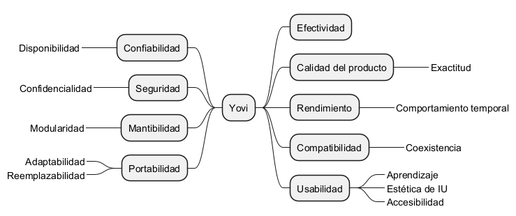
10.2. Escenarios de Calidad
Usabilidad
| Fuente | Estímulo | Artefacto | Entorno | Respuesta | Medida de la respuesta |
|---|---|---|---|---|---|
Usuario |
Intenta acceder a la pantalla de juego |
Interfaz de usuario |
Operación normal |
Número de pasos realizados |
⇐ 3 pasos |
Accesibilidad
| Fuente | Estímulo | Artefacto | Entorno | Respuesta | Medida de la respuesta |
|---|---|---|---|---|---|
Usuario |
Juega una partida con problemas de visión |
Interfaz de usuario |
Operación normal |
Elementos visualizados de forma clara |
>90% elementos |
Rendimiento
| Fuente | Estímulo | Artefacto | Entorno | Respuesta | Medida de la respuesta |
|---|---|---|---|---|---|
Usuario |
Realiza una partida |
Interfaz de usuario |
Operación normal |
Tiempo de respuesta media por acción |
<0.5 segundos |
Bot |
Interactúa con la API |
API para bots externos |
Operación normal |
Tiempo de respuesta media por acción |
<1 segundo |
Mantenibilidad
| Fuente | Estímulo | Artefacto | Entorno | Respuesta | Medida de la respuesta |
|---|---|---|---|---|---|
Stakeholder |
Sugiere añadir un nuevo modo de juego |
Componentes de la aplicación |
Operación de modificación |
Coste de añadir nuevo modo de juego |
Proporcional al tiempo usual de desarrollo, sin coste adicional por deuda técnica |
Seguridad
| Fuente | Estímulo | Artefacto | Entorno | Respuesta | Medida de la respuesta |
|---|---|---|---|---|---|
Usuario |
Se registra en la aplicación |
Interfaz de registro |
Operación normal |
Privacidad de los datos introducidos |
Datos cifrados y accesibles solo por el propio usuario |
Bot |
Accede a información de usuarios |
API de usuarios |
Operación normal |
Privacidad de los datos solicitados |
Solo mostrar información no sensible |
Exactitud
| Fuente | Estímulo | Artefacto | Entorno | Respuesta | Medida de la respuesta |
|---|---|---|---|---|---|
Usuario |
Realiza una jugada |
Interfaz de juego |
Operación normal |
Consistencia de la operación |
La respuesta debe ser siempre la esperada por las reglas del juego |
Bot |
Realiza una jugada |
API de juego |
Operación normal |
Consistencia de la operación |
La respuesta debe ser siempre la esperada por las reglas del juego |
11. Riesgos y deuda técnica
11.1. Dependencia de framework de React
La parte de la interfaz de juego está implementada en React el cual, a diferencia de otro frameworks como Express, impone una forma de desarrollo muy específica que puede dificultar el cambio a otro framework de front-end.
11.2. Formato YEN
El cliente (webapp) posee su propio código para representar el formato YEN y enviarlo de vuelta al servidor. Un cambio en el formato YEN provocará cambios tanto en el código del cliente como el del servidor.
Esta duplicación del código del formato YEN facilita en el desarrollo la representación de la partida, pero puede ser problemática si el formato cambia.
11.3. Programación de bots basados en jugadas concretas
Por cómo se ha realizado la arquitectura de comunicación con el motor de juego, se complica el programar bots que necesiten el historial de jugadas concretas de una partida dada para calcular sus respuestas.
Dar soporte a este tipo de bots requeriría modificar la arquitectura o complicar la implementación de un bot concreto de este tipo.
12. Glosario
| Término | Definición |
|---|---|
Yovi |
Aplicación web que permite a usuarios jugar al juego Y |
Juego Y |
Juego de tablero de dos jugadores que no puede acabar en empate |
Jugador |
Persona humana que se conecta a la aplicación con el objetivo de jugar al juego Y |
Bot |
Entidad externa que se conecta al API de Yovi para jugar o ver el registro de partidas o usuarios |
YEN |
Formato de texto utilizado para representar el estado de una partida del juego Y en Yovi |
gamey |
Motor del juego Y que sirve a la aplicación Yovi |
users |
Sistema de gestión de usuarios que se conecta con la base de datos de Yovi |
webapp |
Cliente de la aplicación web con el que interactúan los jugadores |